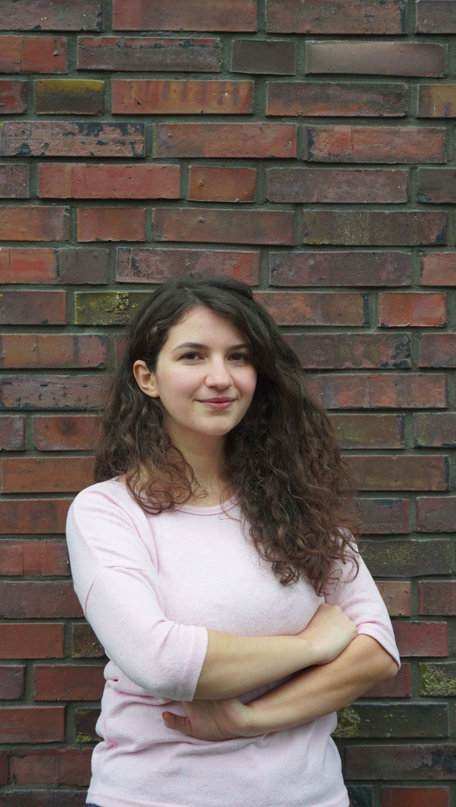

PhD Researcher · Max Planck Institute for Solar System Research
I am a PhD researcher at the Max Planck Institute for Solar System Research, working on the long-term solar irradiance variability. My work uses physics-based modelling to understand how the Sun's brightness has varied from single activity cycles to the past nine millennia.
Reconstructing annual total solar irradiance over the last three millennia.
Revised models of the Sun's surface magnetic field across the telescopic era.
Linking irradiance variability to the physical processes that produce it.